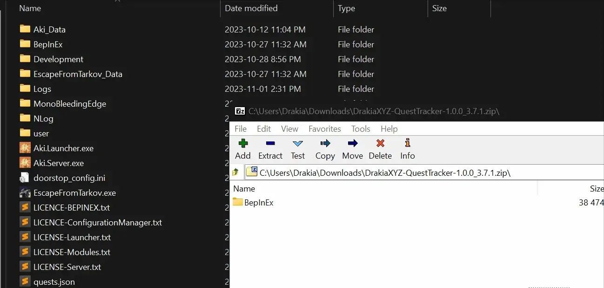

Audio Accessibility Indicators
- Downloads
- 51,659
- Favourites
- 36
- Mod lists
- 36
Since THE CITY is a “hArDcOrE” shooter, there really isn’t any accessibility options. This mod aims to change that.
Each running step, sprinting step, sneaking step, voice line, or gunshot within the configurable range will automatically show up on your HUD. There is a small arrow indicator clarifying if the sound is above or below you, but no arrow indicator if it’s level with you. The distance of these sounds can be interpreted based on how large the indicator is, and how faded it starts out. Each indicator will then fade on it’s own, unless the source of the sound is repeated.
Each indicator is tied to the first bot that makes the specified sound, so if you see multiple indicators, there are multiple bots!
This is my first time creating an accessibility mod (ever), so if you have feedback or require changes to help you do better – PLEASE, let me know!
https://www.youtube.com/watch?v=z8fNTD6ZJ2c
Installation
- Download Audio Accessibility Indicators
- Open the downloaded zip file in 7-zip
- Select the BepInEx folder in the zip file in 7-zip
- Drag the BepInEx folder from 7-zip into your SPT folder
Demonstration Video (yoink):

- Delete
/ROOTSPT/Bepinex/plugins/acidphantasm-accessibilityindicators - Done
Please comment on the hub page, or preferably create an issue on the GitHub, or more preferably visit #acidphantasm-mods in the SPT Discord!
Configuration Options Available in F12
Hover over each option in F12 to see a description
-
Enable/Disable Mod
-
Show Teammates
- For Fika support. No idea if it works on Friendly PMC.
-
Enable/Disable Normalize Distance
- Normalized distance makes all shot/sprint/step/sneak indicators the same size at the same range.
- If you disable this, the indicators make it harder to tell how far the sound actually is because the max distance is different for each indicator
-
Minimum Normalized Distance
- All indicators that display sounds closer than this distance will always be the largest they can be.
-
Maximum Normalized Distance
- All indicators that display sounds further than this distance will always be the smallest they can be.
-
Indicator Offset
- Higher value = further from center. Lower value = closer to center.
-
Enable/Disable Shot Indicators
-
Max Distance for Shot Indicators to be visible
-
Fade Time for Shots Indicators
-
Enemy Shot Colours
-
Friendly Shot Colours
-
Enable/Disable Sprint Indicators
-
Max Distance for Sprint Indicators to be visible
-
Fade Time for Sprint Indicators
-
Enemy Sprint Colours
-
Friendly Sprint Colours
-
Enable/Disable Run Indicators
-
Max Distance for Run Indicators to be visible
-
Fade Time for Run Indicators
-
Enemy Run Colours
-
Friendly Run Colours
-
Enable/Disable Sneak Indicators
-
Max Distance for Sneak Indicators to be visible
-
Fade Time for Sneak Indicators
-
Enemy Sneak Colours
-
Friendly Sneak Colours
-
Enable/Disable Voiceline Indicators
-
Max Distance for Voiceline Indicators to be visible
-
Fade Time for Voice Indicators
If you enjoy my work - you can buy me a coffee~
Version
2.0.1
This version will only work for SPT 4.0.9+
Mod may work on 4.0.0-4.0.8 but I provide no guarantees.
Bugs Squashed
- Resolved Indicators not being shared (AccountId check -> ProfileId check)
- Resolved Sprinting indicators not properly indicating
Version
2.0.0
This version will only work for SPT 4.0.x
No functionality change
Dec 28, 2025 Edit: Known Issues
- Sprint Indicators don’t properly indicate
- Indicators stopped being properly assigned to bots at some point in time between 4.0.0 - 4.0.9
- Just don’t use this version, use the latest
Version
1.5.1
This version will only work for SPT 3.11.x
Bugs Squashed
- Fixed NRE caused by not disabling the indicators when done being used. Whoopsies!
Version
1.5.0
This version will only work for SPT 3.11.x
3.11 Update
Changes
- Bundle has been rebuilt
- Pooled object count is cut in half
Version
1.4.1
This version will only work for SPT 3.10.x
Changes
- Allow Indicator Offset in F12 to be negative (Acceptable range now -50 to 100)
Bugs Squashed
- Add NRE checks to HUD disposal
- Fixed indicators failing to rotate with the player’s look direction after the first raid
Version
1.4.0
This version will only work for SPT 3.10.x
New Features
- Customizable Shot/Sprint/Run/Sneak Indicator Colours
- Customizable Indicator Draw Offset (allows moving indicators closer or further from center of screen)
Changes
- Indicator UI now scales with resolution properly
- Indicator image/scale/size adjustments to fit new scaling/colours
- Verticality indicators position adjusted to be centered on the primary indicator instead of offset to each side
Version
1.3.0
This version will only work for SPT 3.10.x
3.10 Update
- Changed maximum distance configuration values
Version
1.2.0
This version will only work for SPT 3.9.x
Bugs Squashed
- Fixed NREs caused by KeepNorth script on UI
- Fixed incorrect value assignment on Verticality Object Pool
Version
1.1.0
This version will only work for SPT 3.9.x
New Features
- Voiceline Indicators
- Verticality Indicators
- F12 config: Normalize Indicator Sizes based on distance
- Teammate indicators should have their own colours now (not tested)
Changes
- New Step/Shot indicators (smaller, slight colour change)
- Moved indicators a tiny bit further from the center of screen
- F12 config: Moved Pool Objects to Advanced
Bugs Squashed
- Fixed indicators blocking raycasts…woops
- Fixed indicators flipping at specific distance calculations…woops
- Fixed indicators scaling from incorrect pivot point
Notes
- There are only 4 phrases banned from showing voice indicators. This will be expanded in the future to remove useless, not actual voicelines that you never actually hear.
- Noise made when a bullet connects with a target
- Noise made when a bullet connects with a target that is disappointed (lol)
- Noise made when breathing (faceshields)
- Noise made on death
Version
1.0.0
This version will only work for SPT 3.9.x
Initial release